Home / People
02 — Who we areThe group brings together postdocs, graduate students, and professional staff in quantitative genetics, machine learning, and plant biology — based in Ithaca, NY, and working with partners across USDA-ARS, Cornell, the Boyce Thompson Institute, and beyond.
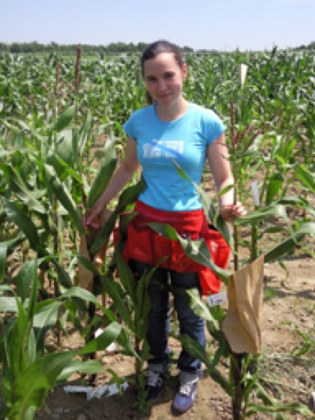
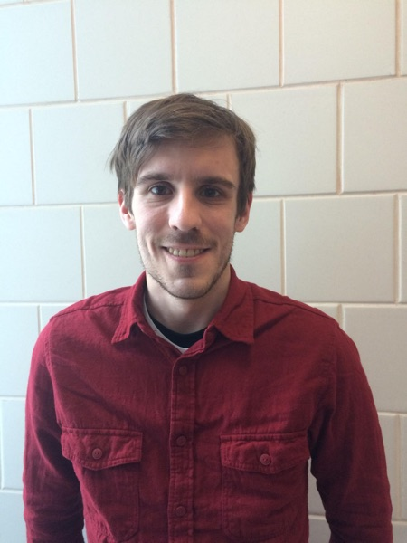
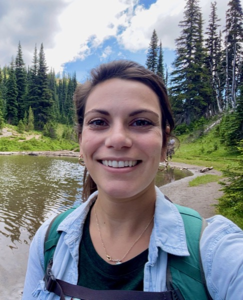
Lara BrindisiPostdoc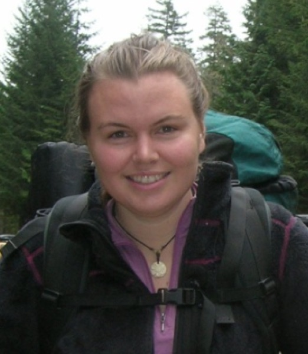
Michelle StitzerPostdoc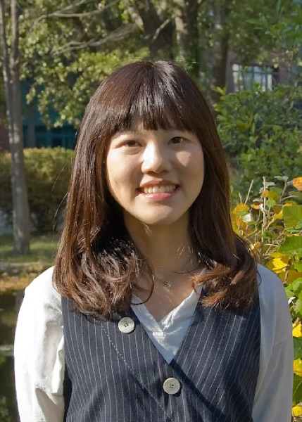
Wei-Yun LaiPostdoc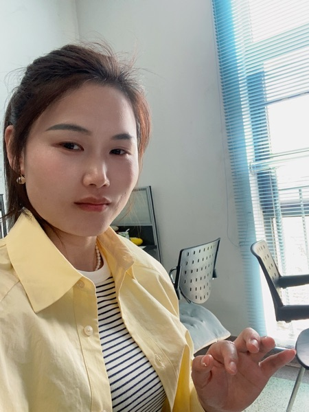
Yun LuoPostdoc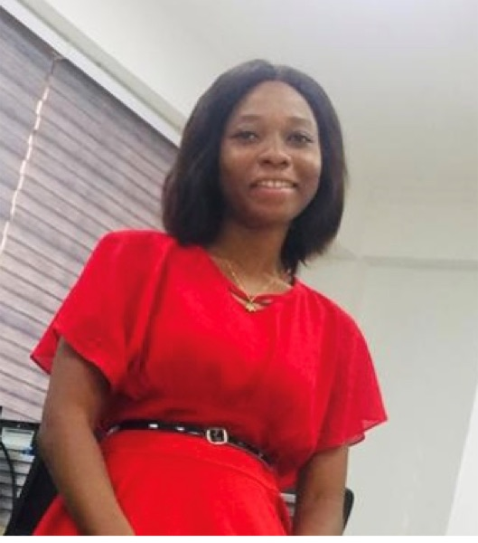
Beatrice KonaduGrad Student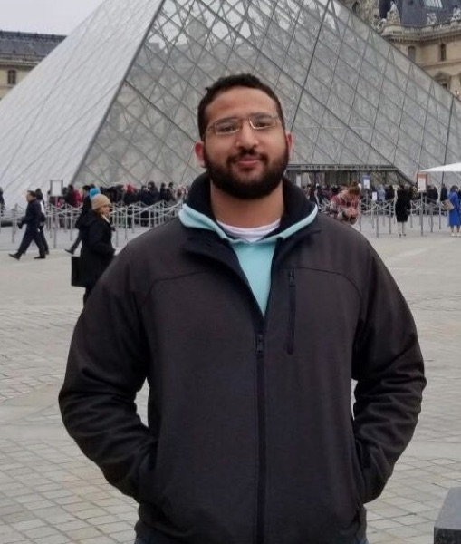
Mohamed El-WalidGrad Student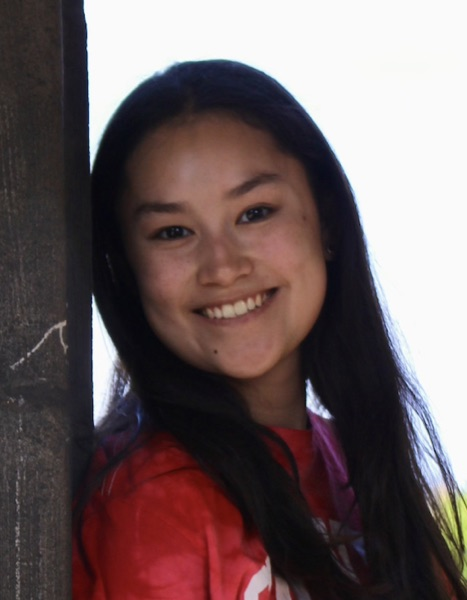
Sarah McMorrowBioinformatics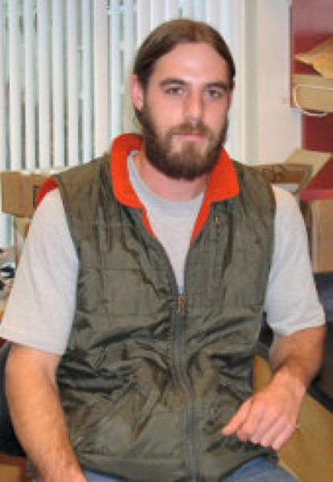
Nick LepakField Manager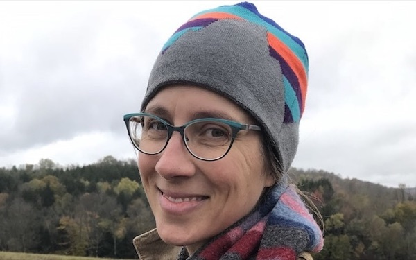
Bethany EconopoulyApplied Genomics Lead


Around a hundred people have passed through the group. Filter by role; hover a bar to see where alumni are now.
Timeline shown with a representative sample; the full roster with exact years is being added.
Around a hundred postdocs, graduate students, and visiting scientists have trained in the group and gone on to lead labs and teams across academia, industry, NGOs, and government worldwide. Mentoring the next generation of quantitative and computational plant scientists is central to what we do.